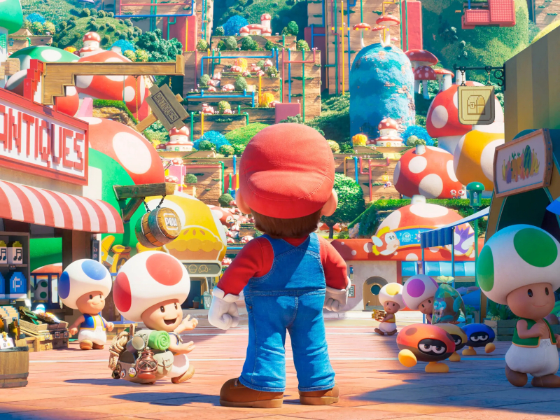

HALシネマ
映画情報
ザ・スーパーマリオブラザーズ・ムービー
世界的人気の任天堂のアクションゲーム「スーパーマリオ」シリーズを、「怪盗グルー」「ミニオンズ」「SING シング」シリーズなどのヒット作を手がけるイルミネーション・スタジオと任天堂が共同でアニメーション映画化。イルミネーション創業者で「怪盗グルー」シリーズなどを送り出してきたプロデューサーのクリス・メレダンドリと、マリオの生みの親でもある任天堂の宮本茂が製作に名を連ねる。
ニューヨークで配管工を営む双子の兄弟マリオとルイージが、謎の土管を通じて魔法に満ちた世界に迷い込む。はなればなれになってしまった兄弟は、絆の力で世界の危機に立ち向かう。マリオとルイージに加え、ピーチ姫、クッパ、キノピオ、ドンキーコング、ヨッシーなど原作ゲームシリーズでおなじみのキャラクターが多数登場する。
監督は「ティーン・タイタンズGO！ トゥ・ザ・ムービー」でタッグを組んだアーロン・ホーバスとマイケル・ジェレニック、脚本は「ミニオンズ フィーバー」のマシュー・フォーゲル。オリジナル版の声の出演には、マリオにクリス・プラット、ピーチ姫にアニヤ・テイラー＝ジョイ、ルイージにチャーリー・デイ、クッパにジャック・ブラックら。日本語版ではマリオを宮野真守、ピーチ姫を志田有彩、ルイージを畠中祐、クッパを三宅健太、キノピオを関智一が務める。